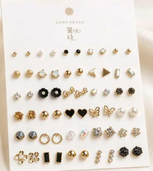

Set 30 Perechi de Cercei Fashion pentru Femei
Set de 30 de perechi de cercei fashion pentru femei, cu modele asortate, strasuri, elemente florale, inimioare, cercuri și imitații de perle.
Prețul și stocul sunt afișate conform catalogului. Confirmă disponibilitatea, cantitatea și condițiile comerciale înainte de comandă.
DETALII PRODUS
Descriere
Setul de 30 de perechi de cercei fashion pentru femei reunește o colecție variată de accesorii decorative, concepută pentru completarea ținutelor de zi cu zi și pentru ocazii speciale. Sortimentul include modele cu forme geometrice, elemente florale, inimioare, cercuri, pietre decorative și finisaje metalice în nuanțe de auriu, argintiu și negru.
Diversitatea modelelor reprezintă principalul avantaj al setului, oferind posibilitatea alegerii unei perechi de cercei în funcție de stilul vestimentar, preferințele individuale și contextul în care sunt purtați.
Cele 30 de perechi sunt organizate pe un suport de prezentare, facilitând identificarea modelelor și păstrarea lor într-un singur loc.
O colecție cu 30 de modele pentru stiluri diferite
Setul combină cercei mici, discreți, cu modele decorative și accesorii cu forme mai expresive, oferind o selecție potrivită pentru diferite preferințe vestimentare.
În colecție se regăsesc:
- Cercei rotunzi: modele minimaliste, cu finisaje metalice lucioase.
- Cercei cu inimioare: accesorii decorative în nuanțe de negru și auriu.
- Cercei florali: modele cu forme inspirate din flori și elemente ornamentale.
- Cercei cu strasuri: accesorii cu pietre decorative strălucitoare.
- Cercei cu aspect de perlă: modele elegante, cu elemente decorative albe.
- Cercei geometrici: forme triunghiulare, dreptunghiulare și circulare.
- Cercei tip cerc: modele mici, cu aspect metalic.
- Cercei cu finisaj negru: accesorii cu aspect modern și contrastant.
- Cercei cu elemente multicolore: modele cu reflexii decorative și detalii strălucitoare.
Această varietate permite combinarea accesoriilor cu ținute casual, office sau elegante, în funcție de preferințele utilizatoarei.
Design versatil pentru ținute cotidiene și ocazii speciale
Colecția este concepută pentru persoanele care preferă să aibă la dispoziție mai multe modele de cercei, fără a achiziționa fiecare pereche separat.
Modelele minimaliste pot completa ținutele de zi, în timp ce perechile cu strasuri, forme florale sau elemente decorative pot fi integrate în combinații vestimentare pentru evenimente și ocazii speciale.
Finisajele variate permit asortarea cu alte accesorii, precum coliere, brățări, inele sau ceasuri.
Dimensiunile reduse ale majorității modelelor contribuie la un aspect discret și facilitează integrarea accesoriilor în diferite stiluri vestimentare.
Combinație de culori și elemente decorative
Setul se remarcă prin alternanța nuanțelor metalice cu elementele ornamentale de diferite forme și texturi.
Finisajele aurii și argintii oferă un aspect clasic, în timp ce modelele negre și cele cu pietre decorative introduc contraste vizuale.
Elementele cu aspect de perlă adaugă o notă elegantă, iar modelele geometrice și florale completează varietatea colecției.
Această combinație permite utilizarea setului atât pentru ținute simple, cât și pentru stiluri vestimentare mai elaborate.
Suport de prezentare pentru organizare practică
Cele 30 de perechi sunt dispuse pe un carton-suport de prezentare, care permite observarea simultană a modelelor incluse.
Organizarea pe rânduri facilitează identificarea rapidă a cerceilor și compararea diferitelor forme și finisaje.
Formatul este practic pentru depozitare, expunere și comercializare, fiind potrivit pentru magazinele de accesorii și pentru prezentările de produs în mediul online.
Suportul contribuie la menținerea perechilor grupate și permite evidențierea varietății setului în fotografiile comerciale.
Caracteristici și specificații principale
- Tip produs: set de cercei fashion pentru femei.
- Categorie: bijuterii fashion și accesorii vestimentare.
- Număr total: 30 de perechi.
- Număr cercei: 60 de bucăți.
- Modele: asortate, cu forme și finisaje diferite.
- Tipuri de cercei: modele mici cu prindere tip știft și modele tip cerc.
- Forme decorative: rotunde, geometrice, florale, inimioare și alte modele ornamentale.
- Elemente decorative: strasuri, pietre ornamentale și imitații de perle.
- Culori predominante: auriu, argintiu, negru și alb.
- Alte detalii cromatice: elemente multicolore și reflexii decorative.
- Finisaje: lucioase, metalizate și texturate.
- Stil: casual, elegant, modern și minimalist.
- Destinație: accesorii vestimentare pentru femei.
- Utilizare: zilnică, ocazională și pentru evenimente.
- Prezentare: set organizat pe carton-suport.
- Caracter reutilizabil: accesorii destinate utilizărilor repetate.
- Întreținere: curățare delicată și depozitare într-un loc uscat.
- Conținut pachet: 30 de perechi de cercei cu modele asortate.
Materialul metalic exact, dimensiunile individuale și compoziția elementelor decorative trebuie confirmate din specificațiile furnizorului.
Avantaje comerciale pentru distribuția B2B
Setul de 30 de perechi de cercei fashion este potrivit pentru distribuitorii de bijuterii, magazinele de accesorii și comercianții care urmăresc extinderea sortimentului cu produse de modă feminină.
Formatul cu mai multe perechi într-un singur pachet reprezintă un avantaj pentru prezentarea comercială, oferind cumpărătoarelor o selecție diversificată de modele.
Principalele beneficii pentru revânzători:
- Sortiment variat într-un singur articol comercial.
- 30 de perechi cu designuri diferite.
- Combinație de modele minimaliste și decorative.
- Prezentare compactă, pe un singur suport.
- Fotografiere facilă pentru magazine online și marketplace-uri.
- Posibilitate de comercializare ca set de accesorii sau idee de cadou.
- Potrivit pentru magazine de bijuterii fashion și accesorii pentru femei.
- Format practic pentru depozitare și manipulare.
- Compatibil cu oferte comerciale dedicate accesoriilor vestimentare.
Varietatea modelelor și prezentarea organizată fac din acest set o opțiune pentru cataloagele B2B, fiind potrivit pentru comercializarea alături de coliere, brățări, inele și alte bijuterii fashion.
Recomandări de întreținere și informații importante
Pentru păstrarea aspectului decorativ, se recomandă evitarea contactului prelungit cu apa, parfumurile, produsele cosmetice și substanțele de curățare.
Cerceii trebuie depozitați într-un spațiu uscat, ferit de umezeală și de contactul cu obiecte care pot zgâria suprafețele decorative.
Înainte de comercializare, este necesară confirmarea materialului de fabricație, a tipului de închidere și a conformității produsului cu cerințele aplicabile bijuteriilor și accesoriilor metalice.
Comandă și informații
Site-ul funcționează ca un catalog B2B. Nu există plată online sau coș de cumpărături. Stoc declarat: 0 buc. Confirmă disponibilitatea înainte de comandă.
Discută pe WhatsApp →DIN ACEEAȘI CATEGORIE